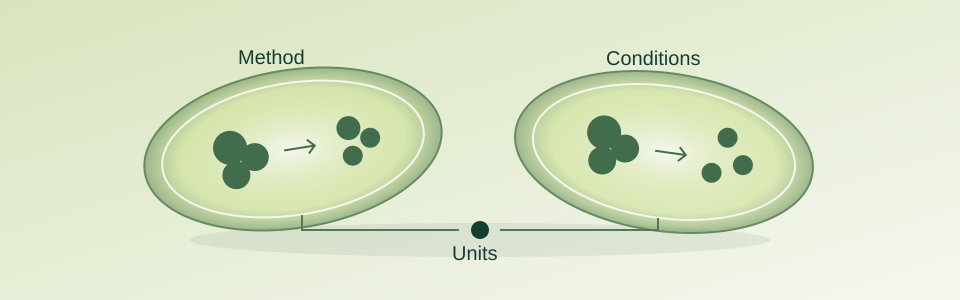

Quality & documentation
Site certificates and batch COAs: read the scope first
Which site and activities does a certificate cover, and which product and batch does a COA describe? A practical record keeps the questions separate.
Read the articlePractical reading for the questions behind the work. Explore how to read technical information and put a comparison in context.
Which site and activities does a certificate cover, and which product and batch does a COA describe? A practical record keeps the questions separate.
Read the article
A larger activity number is not the starting point. Keep the method, conditions and reporting basis beside each value before deciding what can be compared.
Read the articleOur science topic and application guide remain available alongside these articles.
How enzymes workApplication trial guidanceResource center